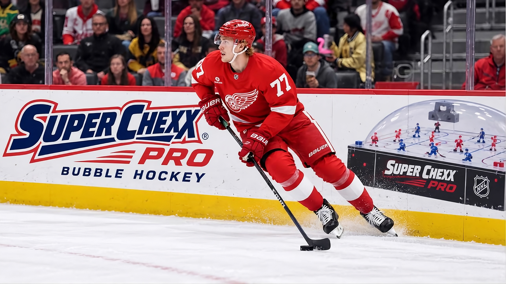

NOTÍCIA
Simon Edvinsson pode estar na mira dos Penguins após pedir troca de Detroit

Simon Edvinsson em ação pelos Red Wings. (Foto: NHL®)
Por:
pensbrasil4 de outubro de 2026
A temporada não poderia estar começando de uma forma pior para os Red Wings. Após o ex-capitão Dylan Larkin ter pedido para sair da equipe, o descontentamento da torcida com a gestão da franquia só aumentou. Agora, chegou a vez do jovem defensor Simon Edvinsson pedir para ser trocado.
Edvinsson, joia da defesa dos Wings, tem 23 anos e foi a 6ª escolha geral do Draft de 2021. O jogador sueco ainda não renovou seu contrato com a equipe, e anunciou ontem que pretende ser negociado com outra franquia.
Decisão agita o mercado em toda a liga
Agora livre no mercado, Edvinsson atraiu o interesse de diversas equipes, com os primeiros rumores de troca já surgindo. E os Penguins provavelmente não vão ficar de fora dessa disputa.
O valor de um suposto contrato de Edvinsson ainda é incerto. Apesar da tendência de aumento dos contratos em toda a liga, os Penguins tem os recursos necessários, além de espaço suficiente no teto salarial para fazer a negociação. E ainda há uma série de fatores que podem aumentar o interesse de Pittsburgh.
Kyle Dubas em busca de defesa e rejuvenescimento
Edvinsson se encaixa perfeitamente no perfil de jogador que Kyle Dubas tem procurado. Com apenas 23 anos, o defensor é uma aposta segura para o futuro da equipe, que busca jogadores jovens para rejuvenescer o elenco. Além disso, ele é um defensor canhoto (LHD), função que os Penguins buscam reforçar.
A proposta é interessante, pois Edvinsson pode ser uma adição mais valiosa do que outros jogadores envolvidos em rumores, como Alexander Nikishin, defensor dos Hurricanes, que pode acabar custando muito caro aos cofres dos Penguins.
Quem sai para dar lugar a Edvinsson?
A defesa dos Penguins parece estar bem estabelecida com a adição de novos nomes na última offseason. Mas a chegada de Edvinsson na equipe pode exigir algumas mudanças.
As novas contratações têm dado resultado até o momento. Declan Carlile demonstrou qualidade na defesa, e marcou seu primeiro gol como Penguin na última partida. Além dele, Kaedan Korczak e Trevor van Riemsdyk tem contribuído positivamente.
Não se pode garantir que Kyle Dubas esteja disposto a mover esses jogadores tão facilmente. E o mesmo pode ser dito sobre nomes estabelecidos, como Kris Letang e Erik Karlsson. Isso levanta dúvidas a respeito das movimentações necessárias para a adição de Edvinsson.
Realisticamente, uma troca com os Red Wings envolveria nomes de peso, prospects, e seria seguida de uma extensão de contrato a longo prazo. De uma forma ou de outra, uma eventual negociação exigiria uma série de decisões a serem tomadas por Dubas.